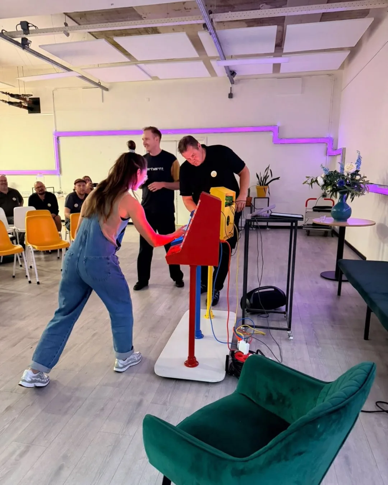
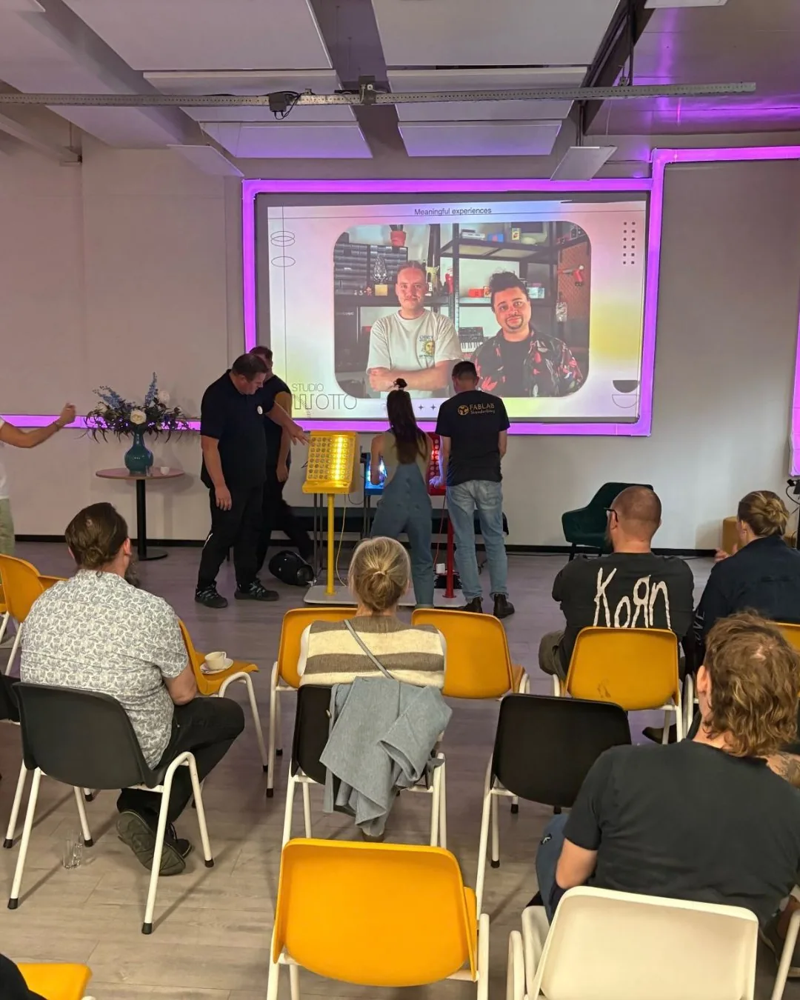
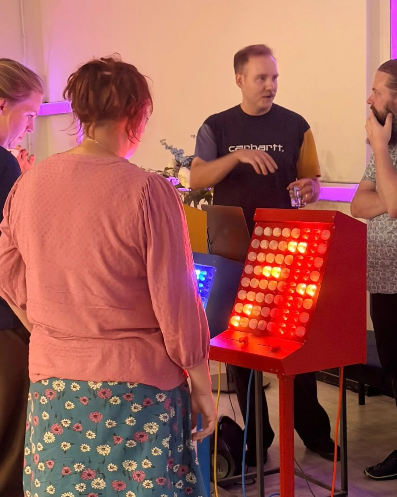
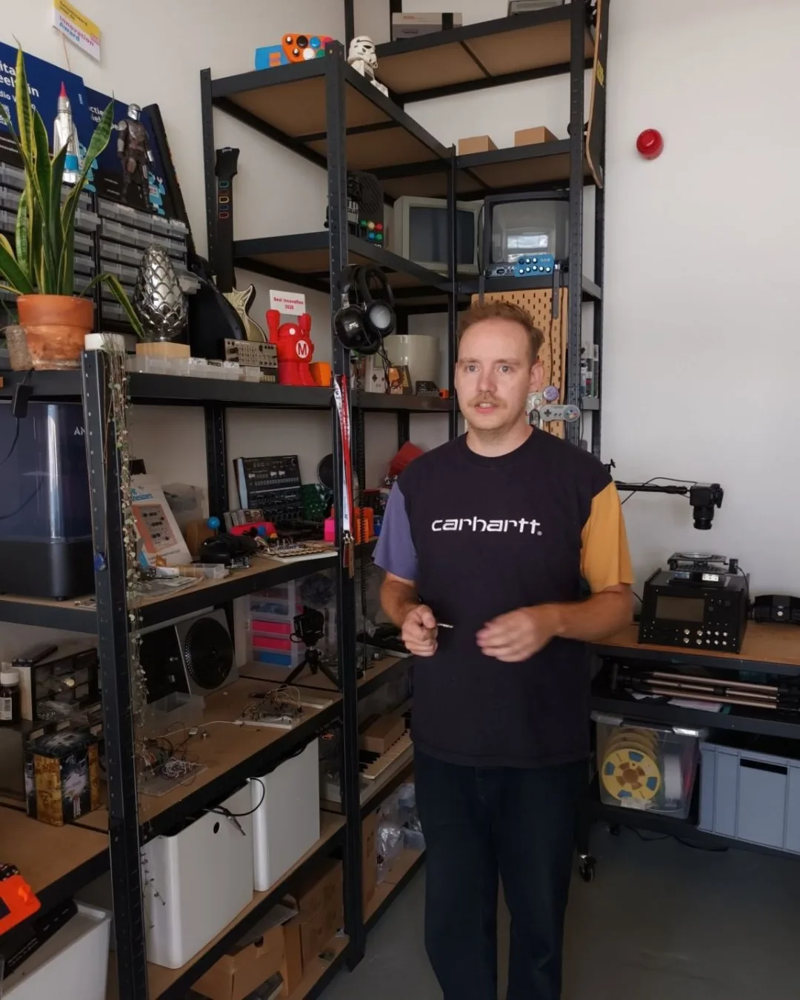
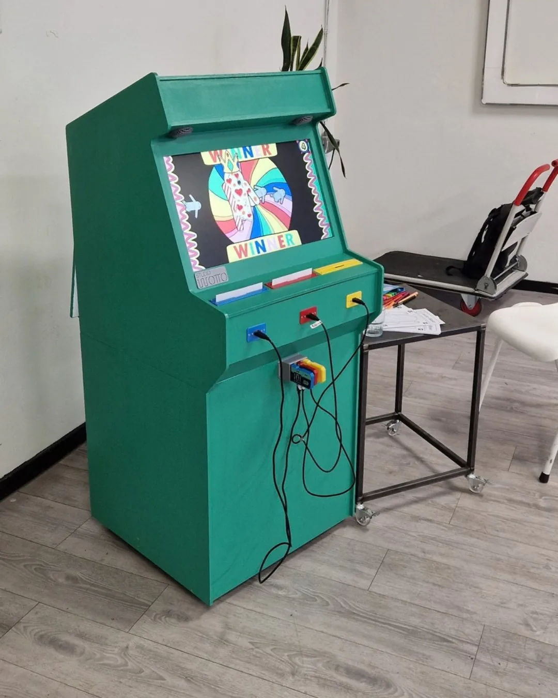
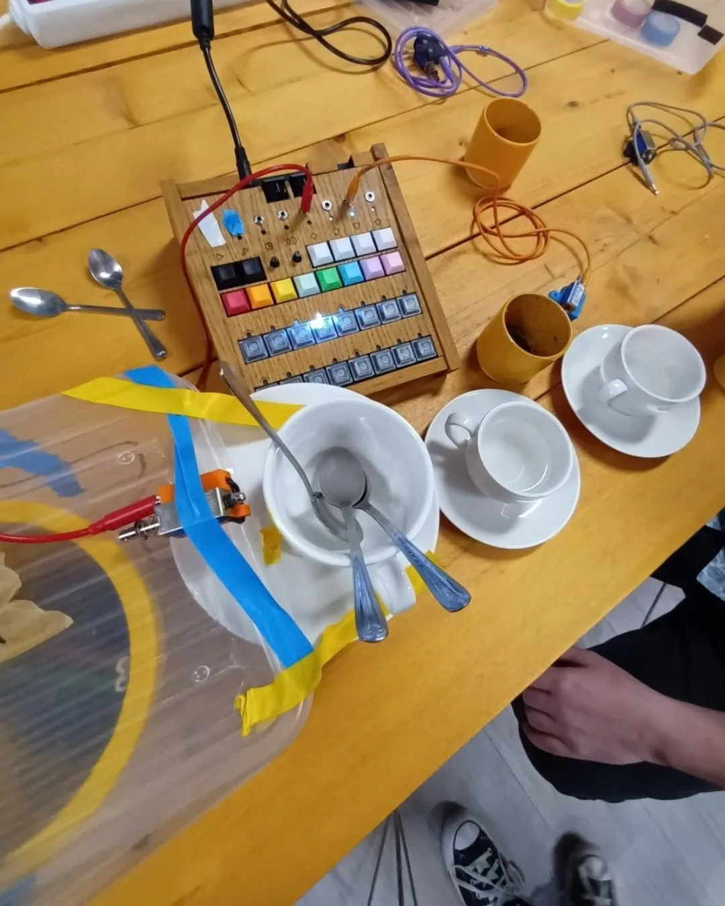
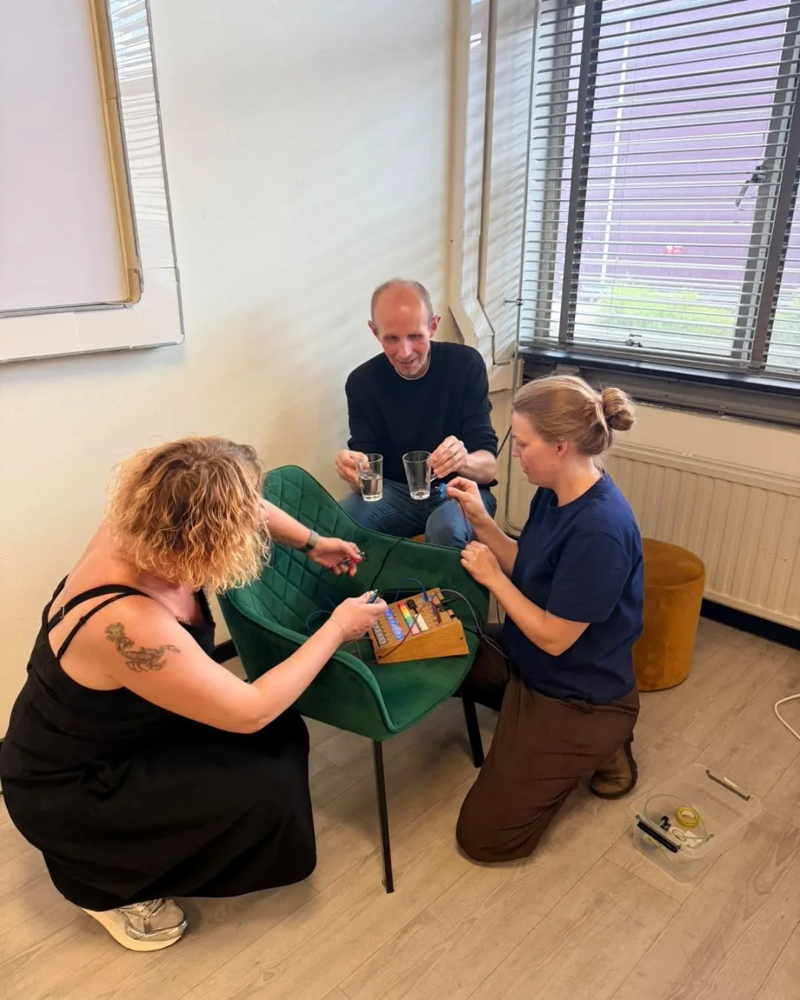

Deense makers op bezoek in mijn makershol
Drie random mensen naar voren vragen die dan samen muziek moeten maken. Dat is hoe ik een presentatie start 🤣

Geen uitleg, geen oefenen. Gewoon knoppen drukken en luisteren naar elkaar. Binnen een minuut staat er een beat en heeft niemand nog een idee wat er net gebeurde. Precies dat gevoel wil ik pakken.
Vorige week deed ik dat samen met Jaimy voor een groep Denen die speciaal naar Eindhoven waren gekomen voor inspiratie. Makers uit allemaal verschillende makerspaces uit heel Denemarken. Ze geven zelf workshops aan jongeren en kwamen eens een kijkje nemen in mijn toko.
Ik liet ze mijn makershol zien en vertelde als Jantje Willie Wortel over al mijn uitvindingen, terwijl ze tussendoor gewoon aan alles mochten zitten. Van de arcadekast waar je je eigen tekening tot leven ziet komen, tot de Beatmachine waar je leert samenwerken.
Daarna gaf Jaimy Kortenhoff een workshop geluidskunstwerk maken met drummende motoren. Het moest goed klinken, maar ook mooi zijn. Dat is lastiger dan het lijkt.
Laatst vroeg iemand mij nog wat ik nou eigenlijk doe. Ik zei maar "ik maak speelgoed voor volwassenen". Misschien is dat wel het meest allesomvattend. Technologie en creativiteit is mijn gereedschap. Mensen bij elkaar brengen en lekker spelen, dat is waar ik het voor doe.
Tobias Smith, bedankt voor de uitnodiging en het vertrouwen. En allemaal bedankt voor het spelen bij Studio Wotto!





